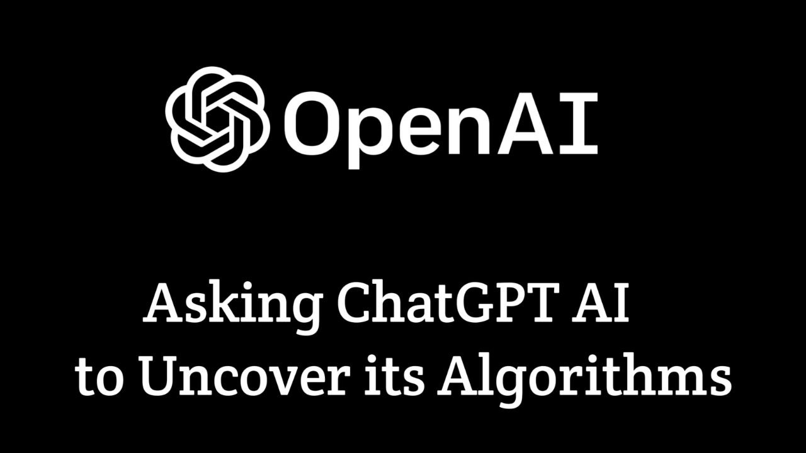

Asking ChatGPT OpenAI to Uncover its Algorithms

ChatGPT - OpenAI
ChatGPT is a prototype artificial intelligence(AI) chatbot which has been developed by a company called OpenAI
of one of the richest billionaires in the planet-Elon Musk that focuses on
usability and dialogue. It was launched in November 2022 and has gained alot of resonses in just a month.
Though the OpenAI,chatbot is famous for its accuracy & historical knowledge, its meen criticized by many for
being an openAI as anyone from anywhere around the globe can access the AI for free.
The chatbot uses a large language model trained with reinforcement learning and is based on the GPT-3.5 architecture.
ChatGPT was trained using reinforcement learning from human feedback which is a method that augments machine
learning with human intervention sothat it could achieve a realistic result based on the GPT-3.5 architecture.
While the chatAI was in its training process, human trainers played the role of a user and an artificial intelligence
assistant. Several Models were trained on Microsoft Azure's supercomputing infrastructure, and were fine-tuned
through Proximal Policy Optimization algorithms. Proximal Policy Optimization algorithms present
a cost-effective benefit to trust region policy optimization
algorithms; they negate many of the computationally expensive operations with faster performance.
Asking ChatGPT OpenAI to Reveal its Algorithms
Question 1 : What's the actual reason for creating ChatGPT ?
Answer By AI : The actual reason for creating ChatGPT is not publicly known, as it is a proprietary technology developed by OpenAI. However, it is likely that ChatGPT was developed as a tool for generating human-like text in response to user input, with applications in areas such as conversational AI and natural language processing. This technology can be used to improve the capabilities of virtual assistants and other language-based systems, allowing them to better understand and respond to user input in a more natural and intuitive way.
Question 2 : Which programming language has been used in ChatGPT?
Answer By AI : It is likely that ChatGPT has been implemented using a combination of programming languages, including Python and C++. OpenAI has not publicly disclosed the specific programming languages used to develop ChatGPT. However, many of the underlying deep learning algorithms and natural language processing techniques used by ChatGPT are commonly implemented in Pytho a popular programming language for machine learning and artificial intelligence applications.
Question 3 : How chatgpt works? Uncover your algorithms
Answer By AI : ChatGPT is a large language model trained by OpenAI to generate human-like
text in response to user input. It uses a combination of deep learning algorithms and natural
language processing techniques to produce text that is coherent and relevant to the user's input.
One of the main algorithms used by ChatGPT is a type of artificial neural network called a recurrent
neural network (RNN). RNNs are designed to process sequential data, such as text or time series data,
and can learn to recognize patterns in the input data.
To generate text, ChatGPT first processes the user's input to understand its meaning and context.
It then uses its RNNs to generate text one word at a time, based on the patterns it has learned
from the input data. As it generates each word, it uses a scoring function to evaluate the likelihood
that the word will be a good fit in the current context, and uses this information to guide its text
generation.
Overall, ChatGPT's combination of RNNs and natural language processing techniques allows it to produce human-like text that is relevant and coherent in response to user input.
Question 4 : Is chatgpt going to be the next search engine?
Answer By AI : It is unlikely that ChatGPT will become the next search engine.
While ChatGPT is a powerful language model that can generate human-like text in
response to user input, it is not designed to perform the same kind of information
retrieval and ranking functions that are the core of a search engine.
Search engines
use a variety of algorithms and techniques to index and rank web pages based on their
relevance to specific search queries, whereas ChatGP
is primarily focused on generating text based on its understanding of the input it
receives.
Question 5 : Will chatgpt replace google in coming years?
Answer By AI : It is highly unlikely that ChatGPT will replace Google in the coming years.
While ChatGPT is a powerful language model that can generate human-like text in response
to user input, it is not designed to perform the same kind of information retrieval and
ranking functions that are the core of Google's search engine.
Google has a vast database
of indexed web pages and uses sophisticated algorithms to rank them based on their
relevance to specific search queries, whereas ChatGPT is primarily focused on
generating text based on its understanding of the input it receives. Additionally,
Google offers a wide range of other products and services beyond its search engine,
such as email,
cloud storage, and advertising, which are not within the scope of ChatGPT's capabilities.
Question 6 : What are your limitations? Explain.
Answer By AI : As a large language model trained by OpenAI, I have been
designed to assist users with a wide range of tasks, such as answering
questions, providing information, and generating text. However,
I am not a perfect or infallible system, and I have several limitations
that users should be aware of.
One of my main limitations is that I am not able to browse the web or access
external information. I can only provide answers based on the information that
I have been trained on, which has a fixed cutoff point. This means that I
may not be able to provide accurate or up-to-date information on certain
topics, or
I may not be able to answer questions that require access to external sources.
Another limitation is that I am a machine learning model, and as such, I am not capable of reasoning, understanding,
or thinking in the same way that a human being can. I can only provide answers based on the patterns and associations that
I have learned from the data that I have been trained on, and I may not be able to provide intuitive or creative answers to certain questions.
Additionally, I am not able to provide personalized or individualized answers, as I am a pre-programmed system that does not have the ability to learn or adapt
to individual users. I can only provide general answers that may or may not be applicable to a specific user's situation.
Overall, my main function is to provide users with helpful and accurate information and assistance, but there are certain limitations to what I am able to do.
Conclusion
The article on chatgpt discussed the capabilities and potential uses of the chatgpt
language model. It demonstrated how chatgpt can generate human-like responses to a
variety of inputs, making it a useful tool for tasks such as conversational agents
and content generation.
The article also touched on the limitations of chatgpt,
including its reliance on large amounts of training data and the potential ethical
considerations surrounding the use of language models like chatgpt. Overall,
the article provided a comprehensive overview of
chatgpt and its potential impact on the field of natural language processing.